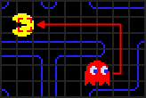

Python Programming
Lecture 6 Game of Life, Functions
6.1 Game of Life
-
Stephen Wolfram was not the only mathematician to study cellular automata. Probably the most famous cellular automaton was invented by John Conway and is called the Game of Life.

-
Conway is currently Professor Emeritus of Mathematics at Princeton University in New Jersey.
Game of Life
-
Conway’s automaton consists of cells that are laid out on a two-dimensional grid.
-
this grid goes on indefinitely in all directions. Each cell on the grid has eight neighbors: the cells that surround it orthogonally and diagonally. Each cell can be in two different states: It is either dead or alive.
-
In most examples, dead cells are rendered white, while live cells are colored black.
Rules
-
A live cell that has fewer than two live neighbors dies from loneliness.
-
A live cell that has more than three live neighbors dies from overcrowding.
-
A live cell that has two or three live neighbors stays alive.
-
A dead cell that has exactly three live neighbors becomes alive.
Example
-
When set into motion, the Game of Life usually has quite chaotic results, with a lot of activity exploding from its original live cells.
-
Demo: Game of Life (Random)
-
Frequently after a number of iterations the Game of Life settles in a more or less stable configuration, sometimes with a few groups of cells that oscillate between two states.
-
One of the earliest questions that the researchers studying the Game of Life asked themselves was this: “Is there an initial configuration of live cells that expands forever?”
-
glider
-
Demo: glider and double gliders

-
Glider gun
-
Demo: glider gun


6.2 Pac-man Game
-
Pac-Man (Japanese: パックマン Hepburn: Pakkuman), stylized as PAC-MAN, is an arcade game developed by Namco and first released in Japan in May 1980.


-
Red Ghost
- 
-
Pink Ghost
-


-
Blue Ghost
-


-
Orange Ghost
-


Wrapping up
-
Pac-Man is an amazing example of seemingly-complex behavior arising from only a few cleverly-designed rules
-
The combination of simple behaviors gives players the impression they are being hunted collaboratively, when they simply have complementary strategies.
-
Finally, let's take a look at the AMAZING game of life again.
6.3 Functions (3)
passing a list, arbitrary arguments
Passing a list
def greet_users(names):
for name in names:
msg = "Hello, " + name.title() + "!"
print(msg)
usernames = ['hannah', 'ty', 'margot']
greet_users(usernames)
Hello, Hannah!
Hello, Ty!
Hello, Margot!
-
Modifying a List in a Function
unprinted_designs = ['iphone case', 'robot pendant', 'dodecahedron']
completed_models = []
while unprinted_designs:
current_design = unprinted_designs.pop()
print("Printing model: " + current_design)
completed_models.append(current_design)
print("\nThe following models have been printed:")
for completed_model in completed_models:
print(completed_model)
Printing model: dodecahedron
Printing model: robot pendant
Printing model: iphone case
The following models have been printed:
dodecahedron
robot pendant
iphone case
-
Defining two functions
def print_models(unprinted_designs, completed_models):
while unprinted_designs:
current_design = unprinted_designs.pop()
print("Printing model: " + current_design)
completed_models.append(current_design)
def show_completed_models(completed_models):
print("\nThe following models have been printed:")
for completed_model in completed_models:
print(completed_model)
unprinted_designs = ['iphone case', 'robot pendant', 'dodecahedron']
completed_models = []
print_models(unprinted_designs, completed_models)
show_completed_models(completed_models)
Printing model: dodecahedron
Printing model: robot pendant
Printing model: iphone case
The following models have been printed:
dodecahedron
robot pendant
iphone case
-
Preventing a Function from Modifying a List
-
Create a copy of the list
function_name(list_name[:])
print_models(unprinted_designs[:], completed_models)
-
Passing an Arbitrary Number of Arguments
def make_pizza(*toppings):
print(toppings)
make_pizza('pepperoni')
make_pizza('mushrooms', 'green peppers', 'extra cheese')
-
Note that Python packs the arguments into a tuple, even if the function receives only one value.
def make_pizza(*toppings):
print("\nMaking a pizza with the following toppings:")
for topping in toppings:
print("- " + topping)
make_pizza('pepperoni')
make_pizza('mushrooms', 'green peppers', 'extra cheese')
Making a pizza with the following toppings:
- pepperoni
Making a pizza with the following toppings:
- mushrooms
- green peppers
- extra cheese
-
Mixing Positional and Arbitrary Arguments
-
If you want a function to accept several different kinds of arguments, the parameter that accepts an arbitrary number of arguments must be placed last in the function definition.
def make_pizza(size, *toppings):
print("\nMaking a " + str(size) +
"-inch pizza with the following toppings:")
for topping in toppings:
print("- " + topping)
make_pizza(16, 'pepperoni')
make_pizza(12, 'mushrooms', 'green peppers', 'extra cheese')
Making a 16-inch pizza with the following toppings:
- pepperoni
Making a 12-inch pizza with the following toppings:
- mushrooms
- green peppers
- extra cheese
-
Using Arbitrary Keyword Arguments
def build_profile(first, last, **user_info):
profile = {}
profile['first_name'] = first
profile['last_name'] = last
for key, value in user_info.items():
profile[key] = value
return profile
user_profile = build_profile('albert', 'einstein',
location='princeton',
field='physics')
print(user_profile)
{'first_name': 'albert', 'last_name': 'einstein',
'location': 'princeton', 'field': 'physics'}
-
Example
def test(x,y=1,*a,**b):
print(x,y,a,b)
test(1)
test(1,2)
test(1,2,3)
test(1,2,3,4)
test(x=1,y=2)
test(1,a=2)
test(1,2,3,a=4)
test(1,2,3,y=4)
-
Result
1 1 () {}
1 2 () {}
1 2 (3,) {}
1 2 (3, 4) {}
1 2 () {}
1 1 () {'a': 2}
1 2 (3,) {'a': 4}
Traceback (most recent call last):
File "test.py", line 11, in
test(1,2,3,y=4)
TypeError: test() got multiple values for argument 'y'
6.4 Functions (4)
Return a function, Recursion Intro
- Return a function
def calc_sum(*args):
ax = 0
for n in args:
ax = ax + n
return ax
def lazy_sum(*args):
def sum():
ax = 0
for n in args:
ax = ax + n
return ax
return sum
f = lazy_sum(1, 3, 5, 7, 9)
print(f()) # print(f) causes error
print(type(f)) #Even if you delete lazy_sum, f still exists.
25
function
>>> f1 = lazy_sum(1, 3, 5, 7, 9)
>>> f2 = lazy_sum(1, 3, 5, 7, 9)
>>> f1==f2
False
-
Defining a closure function
-
When do we have a closure?
-
We must have a nested function (function inside a function).
-
The nested function must refer to a value defined in the enclosing function.
-
The enclosing function must return the nested function.
-
-
When to use closures?
-
Closures can avoid the use of global values and provides some form of data hiding. It can also provide an object oriented solution to the problem.
-
Example
def print_msg():
msg = "zen of python"
def printer():
return msg
return printer
another = print_msg()
print(another())
def make_multiplier_of(n):
def multiplier(x):
return x * n
return multiplier
# Multiplier of 3
times3 = make_multiplier_of(3)
# Multiplier of 5
times5 = make_multiplier_of(5)
# Output: 27
print(times3(9))
# Output: 15
print(times5(3))
# Output: 30
print(times5(times3(2)))
Late binding of closures
def count():
fs = []
for i in range(1, 4):
def f():
return i*i
fs.append(f)
return fs
f1, f2, f3 = count()
print(f1(), f2(), f3())
9 9 9
def count():
fs = []
for i in range(1, 4):
def f(j=i):
return j*j
fs.append(f)
return fs
f1, f2, f3 = count()
def count():
def f(j):
def g():
return j*j
return g
fs = []
for i in range(1, 4):
fs.append(f(i)) # f(i) is executed immediately
return fs
def create_adders():
adders = []
for i in range(10):
def adder(x):
return i + x
adders.append(adder)
return adders
for adder in create_adders():
print(adder(1))
def create_adders():
adders = []
for i in range(10):
def adder(x, j=i):
return j + x
adders.append(adder)
return adders
for adder in create_adders():
print(adder(1))
-
The function you want to return should not cite the variable that will change at a later time (in a loop).
Recursion Brief Intro
-
Calculate: Factorial $n!$
def fact(n):
if n==1:
return 1
else:
return n * fact(n - 1)
===> fact(5)
===> 5 * fact(4)
===> 5 * (4 * fact(3))
===> 5 * (4 * (3 * fact(2)))
===> 5 * (4 * (3 * (2 * fact(1))))
===> 5 * (4 * (3 * (2 * 1)))
===> 5 * (4 * (3 * 2))
===> 5 * (4 * 6)
===> 5 * 24
===> 120
Summary
- Functions
- Reading: Chapter 10.1-10.5, 10.7-10.8
- Reading: Python Crash Course, Chapter 8
- Homework: Problem set 3